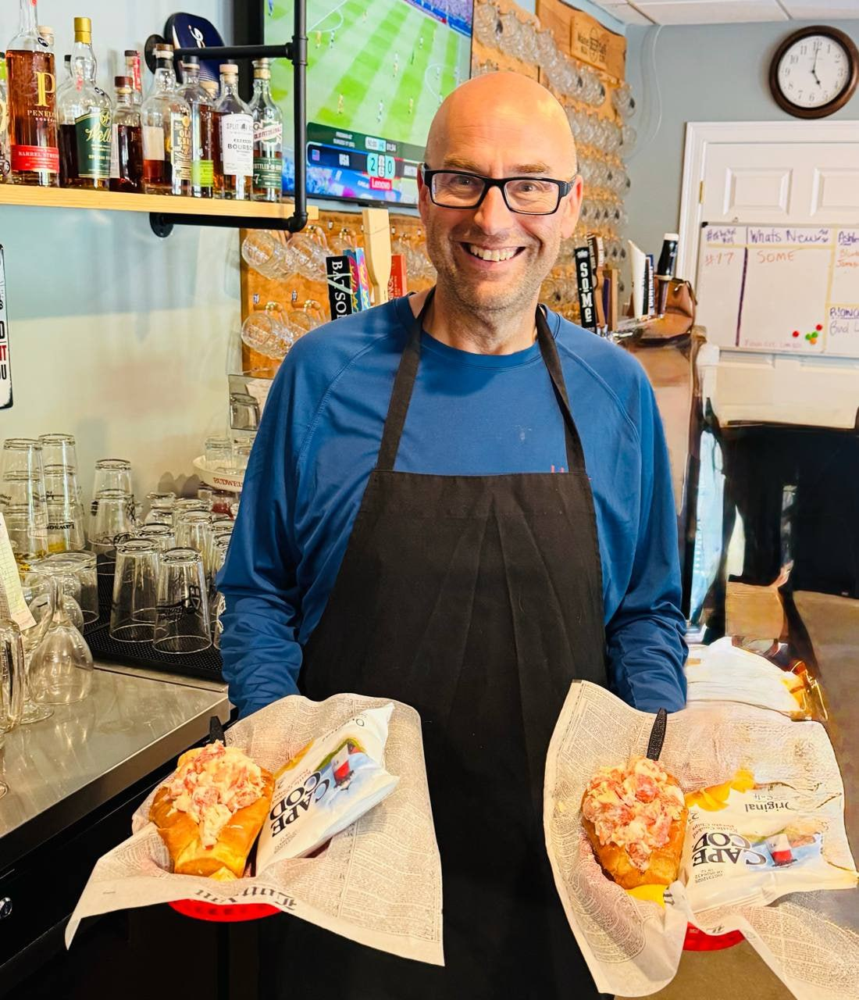
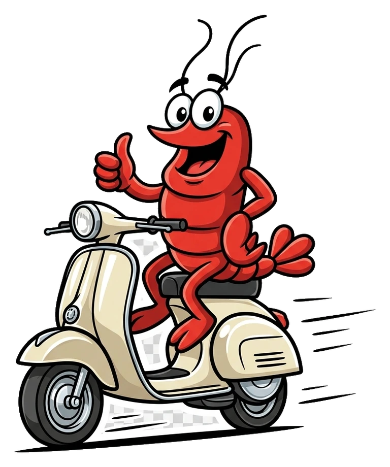
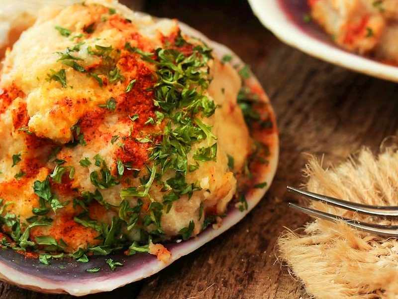
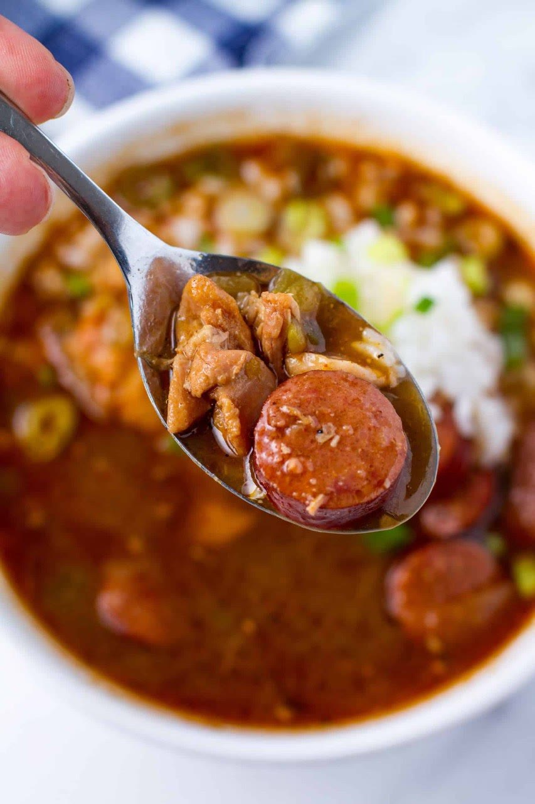
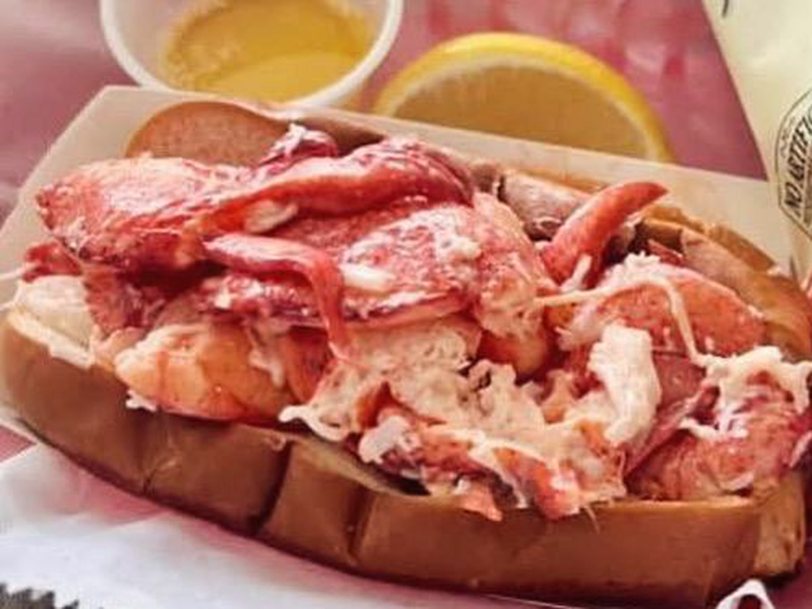

The lobster roll
Fresh-picked, never frozen, piled into a buttered brioche bun. Cold with no mayo, warm butter, or however your Maine conscience allows.
Route 1 · Kittery, Maine
Fresh-picked lobster rolls, wicked-good comfort food, an unreasonable bourbon list, and exactly one lobster licensed to operate a scooter.

The evidence
Hand-picked lobster, chowder, stuffies, burgers, and the kind of food that makes a Route 1 detour look responsible.

Fresh-picked, never frozen, piled into a buttered brioche bun. Cold with no mayo, warm butter, or however your Maine conscience allows.

The clam did most of the work. We added the good stuff and accepted the credit.

Maine took a wrong turn toward Louisiana. Nobody filed a complaint.
Maine's least organized lunch program
Traditions, suspicious prices, and several reasons to plan your week around a lobster shack.
Oysters, seafood, and the midweek investigation Dave refuses to close.
The Route 1 tradition. Fresh-picked rolls until the lobster or Dave runs out.
Whole Maine lobsters, bourbon, and a business model with very little adult supervision.
Your host, suspect, and likely dishwasher
Small room. Big bourbon list. Lobster picked by hand. Local people first. Dave's Maine Cafe is the place where Maine begins, right on Route 1 in Kittery.
“Community First. Profits Second.” Great for the neighborhood. Complicated for the accountant.
Come find usA retail decision was made
Shirts, mugs, and other evidence we should've stuck to lobster rolls.
Case location
439 US Route 1, Kittery, Maine
(207) 475-5655
